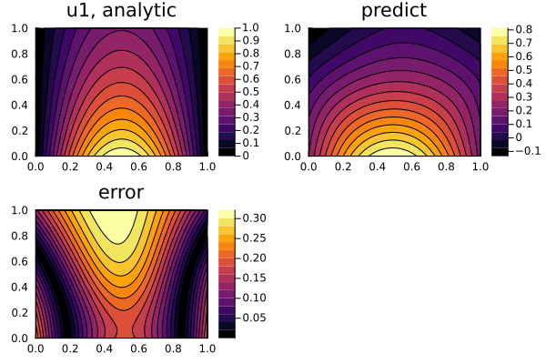
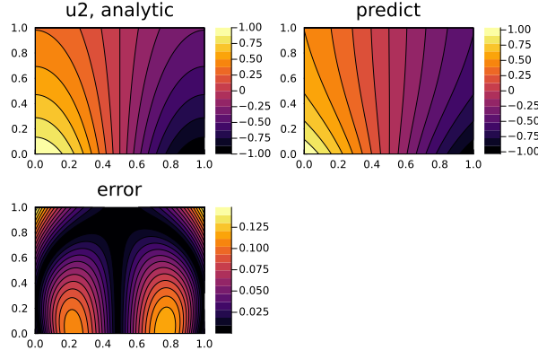
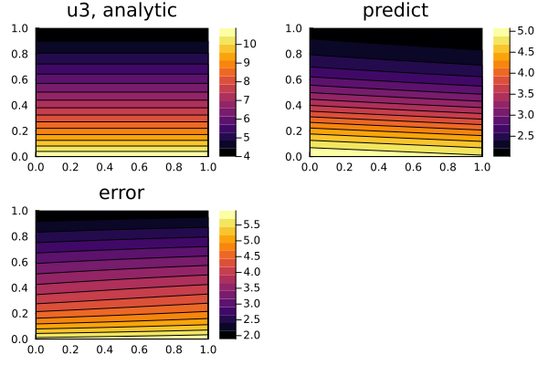

Defining Systems of PDEs for Physics-Informed Neural Networks (PINNs)
In this example, we will solve the PDE system:
\[\begin{align*} ∂_t^2 u_1(t, x) & = ∂_x^2 u_1(t, x) + u_3(t, x) \, \sin(\pi x) \, ,\\ ∂_t^2 u_2(t, x) & = ∂_x^2 u_2(t, x) + u_3(t, x) \, \cos(\pi x) \, ,\\ 0 & = u_1(t, x) \sin(\pi x) + u_2(t, x) \cos(\pi x) - e^{-t} \, , \end{align*}\]
with the initial conditions:
\[\begin{align*} u_1(0, x) & = \sin(\pi x) \, ,\\ ∂_t u_1(0, x) & = - \sin(\pi x) \, ,\\ u_2(0, x) & = \cos(\pi x) \, ,\\ ∂_t u_2(0, x) & = - \cos(\pi x) \, , \end{align*}\]
and the boundary conditions:
\[\begin{align*} u_1(t, 0) & = u_1(t, 1) = 0 \, ,\\ u_2(t, 0) & = - u_2(t, 1) = e^{-t} \, , \end{align*}\]
with physics-informed neural networks.
Solution
using NeuralPDE, Lux, ModelingToolkit, Optimization, OptimizationOptimJL, LineSearches,
OptimizationOptimisers
using DomainSets: Interval
using IntervalSets: leftendpoint, rightendpoint
@parameters t, x
@variables u1(..), u2(..), u3(..)
Dt = Differential(t)
Dtt = Differential(t)^2
Dx = Differential(x)
Dxx = Differential(x)^2
eqs = [
Dtt(u1(t, x)) ~ Dxx(u1(t, x)) + u3(t, x) * sinpi(x),
Dtt(u2(t, x)) ~ Dxx(u2(t, x)) + u3(t, x) * cospi(x),
0.0 ~ u1(t, x) * sinpi(x) + u2(t, x) * cospi(x) - exp(-t)
]
bcs = [
u1(0, x) ~ sinpi(x),
u2(0, x) ~ cospi(x),
Dt(u1(0, x)) ~ -sinpi(x),
Dt(u2(0, x)) ~ -cospi(x),
u1(t, 0) ~ 0.0,
u2(t, 0) ~ exp(-t),
u1(t, 1) ~ 0.0,
u2(t, 1) ~ -exp(-t)
]
# Space and time domains
domains = [t ∈ Interval(0.0, 1.0), x ∈ Interval(0.0, 1.0)]
# Neural network
input_ = length(domains)
n = 15
chain = [Chain(Dense(input_, n, σ), Dense(n, n, σ), Dense(n, 1)) for _ in 1:3]
strategy = StochasticTraining(128)
discretization = PhysicsInformedNN(chain, strategy)
@named pdesystem = PDESystem(eqs, bcs, domains, [t, x], [u1(t, x), u2(t, x), u3(t, x)])
prob = discretize(pdesystem, discretization)
sym_prob = symbolic_discretize(pdesystem, discretization)
pde_inner_loss_functions = sym_prob.loss_functions.pde_loss_functions
bcs_inner_loss_functions = sym_prob.loss_functions.bc_loss_functions
callback = function (p, l)
println("loss: ", l)
println("pde_losses: ", map(l_ -> l_(p.u), pde_inner_loss_functions))
println("bcs_losses: ", map(l_ -> l_(p.u), bcs_inner_loss_functions))
return false
end
res = solve(prob, OptimizationOptimisers.Adam(0.01); maxiters = 1000, callback)
prob = remake(prob, u0 = res.u)
res = solve(prob, LBFGS(linesearch = BackTracking()); maxiters = 200, callback)
phi = discretization.phi3-element Vector{NeuralPDE.Phi{LuxCore.StatefulLuxLayerImpl.StatefulLuxLayer{Val{true}, Lux.Chain{@NamedTuple{layer_1::Lux.Dense{typeof(NNlib.σ), Int64, Int64, Nothing, Nothing, Static.True}, layer_2::Lux.Dense{typeof(NNlib.σ), Int64, Int64, Nothing, Nothing, Static.True}, layer_3::Lux.Dense{typeof(identity), Int64, Int64, Nothing, Nothing, Static.True}}, Nothing}, Nothing, @NamedTuple{layer_1::@NamedTuple{}, layer_2::@NamedTuple{}, layer_3::@NamedTuple{}}}}}:
NeuralPDE.Phi{LuxCore.StatefulLuxLayerImpl.StatefulLuxLayer{Val{true}, Lux.Chain{@NamedTuple{layer_1::Lux.Dense{typeof(NNlib.σ), Int64, Int64, Nothing, Nothing, Static.True}, layer_2::Lux.Dense{typeof(NNlib.σ), Int64, Int64, Nothing, Nothing, Static.True}, layer_3::Lux.Dense{typeof(identity), Int64, Int64, Nothing, Nothing, Static.True}}, Nothing}, Nothing, @NamedTuple{layer_1::@NamedTuple{}, layer_2::@NamedTuple{}, layer_3::@NamedTuple{}}}}(LuxCore.StatefulLuxLayerImpl.StatefulLuxLayer{Val{true}, Lux.Chain{@NamedTuple{layer_1::Lux.Dense{typeof(NNlib.σ), Int64, Int64, Nothing, Nothing, Static.True}, layer_2::Lux.Dense{typeof(NNlib.σ), Int64, Int64, Nothing, Nothing, Static.True}, layer_3::Lux.Dense{typeof(identity), Int64, Int64, Nothing, Nothing, Static.True}}, Nothing}, Nothing, @NamedTuple{layer_1::@NamedTuple{}, layer_2::@NamedTuple{}, layer_3::@NamedTuple{}}}(Lux.Chain{@NamedTuple{layer_1::Lux.Dense{typeof(NNlib.σ), Int64, Int64, Nothing, Nothing, Static.True}, layer_2::Lux.Dense{typeof(NNlib.σ), Int64, Int64, Nothing, Nothing, Static.True}, layer_3::Lux.Dense{typeof(identity), Int64, Int64, Nothing, Nothing, Static.True}}, Nothing}((layer_1 = Dense(2 => 15, σ), layer_2 = Dense(15 => 15, σ), layer_3 = Dense(15 => 1)), nothing), nothing, (layer_1 = NamedTuple(), layer_2 = NamedTuple(), layer_3 = NamedTuple()), nothing, Val{true}()))
NeuralPDE.Phi{LuxCore.StatefulLuxLayerImpl.StatefulLuxLayer{Val{true}, Lux.Chain{@NamedTuple{layer_1::Lux.Dense{typeof(NNlib.σ), Int64, Int64, Nothing, Nothing, Static.True}, layer_2::Lux.Dense{typeof(NNlib.σ), Int64, Int64, Nothing, Nothing, Static.True}, layer_3::Lux.Dense{typeof(identity), Int64, Int64, Nothing, Nothing, Static.True}}, Nothing}, Nothing, @NamedTuple{layer_1::@NamedTuple{}, layer_2::@NamedTuple{}, layer_3::@NamedTuple{}}}}(LuxCore.StatefulLuxLayerImpl.StatefulLuxLayer{Val{true}, Lux.Chain{@NamedTuple{layer_1::Lux.Dense{typeof(NNlib.σ), Int64, Int64, Nothing, Nothing, Static.True}, layer_2::Lux.Dense{typeof(NNlib.σ), Int64, Int64, Nothing, Nothing, Static.True}, layer_3::Lux.Dense{typeof(identity), Int64, Int64, Nothing, Nothing, Static.True}}, Nothing}, Nothing, @NamedTuple{layer_1::@NamedTuple{}, layer_2::@NamedTuple{}, layer_3::@NamedTuple{}}}(Lux.Chain{@NamedTuple{layer_1::Lux.Dense{typeof(NNlib.σ), Int64, Int64, Nothing, Nothing, Static.True}, layer_2::Lux.Dense{typeof(NNlib.σ), Int64, Int64, Nothing, Nothing, Static.True}, layer_3::Lux.Dense{typeof(identity), Int64, Int64, Nothing, Nothing, Static.True}}, Nothing}((layer_1 = Dense(2 => 15, σ), layer_2 = Dense(15 => 15, σ), layer_3 = Dense(15 => 1)), nothing), nothing, (layer_1 = NamedTuple(), layer_2 = NamedTuple(), layer_3 = NamedTuple()), nothing, Val{true}()))
NeuralPDE.Phi{LuxCore.StatefulLuxLayerImpl.StatefulLuxLayer{Val{true}, Lux.Chain{@NamedTuple{layer_1::Lux.Dense{typeof(NNlib.σ), Int64, Int64, Nothing, Nothing, Static.True}, layer_2::Lux.Dense{typeof(NNlib.σ), Int64, Int64, Nothing, Nothing, Static.True}, layer_3::Lux.Dense{typeof(identity), Int64, Int64, Nothing, Nothing, Static.True}}, Nothing}, Nothing, @NamedTuple{layer_1::@NamedTuple{}, layer_2::@NamedTuple{}, layer_3::@NamedTuple{}}}}(LuxCore.StatefulLuxLayerImpl.StatefulLuxLayer{Val{true}, Lux.Chain{@NamedTuple{layer_1::Lux.Dense{typeof(NNlib.σ), Int64, Int64, Nothing, Nothing, Static.True}, layer_2::Lux.Dense{typeof(NNlib.σ), Int64, Int64, Nothing, Nothing, Static.True}, layer_3::Lux.Dense{typeof(identity), Int64, Int64, Nothing, Nothing, Static.True}}, Nothing}, Nothing, @NamedTuple{layer_1::@NamedTuple{}, layer_2::@NamedTuple{}, layer_3::@NamedTuple{}}}(Lux.Chain{@NamedTuple{layer_1::Lux.Dense{typeof(NNlib.σ), Int64, Int64, Nothing, Nothing, Static.True}, layer_2::Lux.Dense{typeof(NNlib.σ), Int64, Int64, Nothing, Nothing, Static.True}, layer_3::Lux.Dense{typeof(identity), Int64, Int64, Nothing, Nothing, Static.True}}, Nothing}((layer_1 = Dense(2 => 15, σ), layer_2 = Dense(15 => 15, σ), layer_3 = Dense(15 => 1)), nothing), nothing, (layer_1 = NamedTuple(), layer_2 = NamedTuple(), layer_3 = NamedTuple()), nothing, Val{true}()))Direct Construction via symbolic_discretize
One can take apart the pieces and reassemble the loss functions using the symbolic_discretize interface. Here is an example using the components from symbolic_discretize to fully reproduce the discretize optimization:
pde_loss_functions = sym_prob.loss_functions.pde_loss_functions
bc_loss_functions = sym_prob.loss_functions.bc_loss_functions
loss_functions = [pde_loss_functions; bc_loss_functions]
loss_function(θ, _) = sum(l -> l(θ), loss_functions)
f_ = OptimizationFunction(loss_function, AutoZygote())
prob = OptimizationProblem(f_, sym_prob.flat_init_params)
res = solve(prob, OptimizationOptimisers.Adam(0.01); maxiters = 1000, callback)
prob = remake(prob, u0 = res.u)
res = solve(prob, LBFGS(linesearch = BackTracking()); maxiters = 200, callback)retcode: Failure
u: ComponentVector{Float64}(depvar = (u1 = (layer_1 = (weight = [-2.4241791740800207 0.7931953744736905; 0.16932466866205906 -3.3004411211216933; … ; -1.441107082390471 -0.6365503189201002; -0.6961702350806585 -1.9972062911897297], bias = [-0.9264431269187986, 3.167648303542209, 1.2314971558491832, 2.084083423031273, 0.14315574019702593, 1.7066873525871702, -2.0608254257664798, -0.3656965668644702, 0.18625854823979318, 0.5493872468972715, -0.49466270801324297, 0.32159091473209056, -0.2814727099962099, -1.2371350914589072, 1.0270475466367786]), layer_2 = (weight = [-0.31673687578084564 -0.6584487151893059 … -0.5993858274644441 -0.5407876717199643; -1.243593096257358 2.1386236623329347 … -0.8686296494680712 0.6328048354423477; … ; 0.37048548441079265 -0.9506879609812302 … 0.2610702336155566 -0.48500922507064465; 0.06750419680521365 -0.030685038274523957 … 0.16554462396121247 0.3554981419697717], bias = [-0.2992783286153567, -0.4100007466537455, -0.00472652219080727, -0.32536413480646625, -0.22142780627196482, -0.02101085276182043, -0.20629535992449113, -0.3173641582474012, 0.30195908996387777, 0.15882441836469763, 0.12018361408888273, -0.09002912203441515, 0.03697037895125817, 0.05253811490947352, 0.005621127409677272]), layer_3 = (weight = [-0.2688802790331286 0.7118338035422636 … -0.42584811499579983 0.5217982863613387], bias = [0.02425162195729891])), u2 = (layer_1 = (weight = [2.9752850237405806 0.3748674180787404; -2.30001392393242 0.3471229896947821; … ; -0.18810161617907914 1.4002399309267046; 3.2141449256441805 1.1918387124912198], bias = [-0.5470041477012415, -0.8753577165010584, -1.3244521730913426, 0.13215154558349226, 0.6635371495616398, -1.1714638383193237, 0.6873789929606657, -1.9590437713387858, -2.295658732360341, 0.2518300027700486, -0.42614587670447146, -1.3708509124052346, 1.4184845609948495, 0.01735233233127257, 0.5252616661026738]), layer_2 = (weight = [1.1177537947099965 -0.49741269613553923 … 0.24945860018386765 -0.3674961786324248; -0.7751057591290985 0.5116948364809972 … 0.09441926887539744 -0.9333194943149958; … ; -0.44446584582563825 0.01671659796301825 … 0.3177062153845557 -0.49443984356784054; -0.7794509836563555 0.8559629565659912 … -0.19778402075840026 -1.0218335357737132], bias = [0.6047569065464473, 0.15714464859376026, -0.19515067183967705, 0.31029122506532997, 0.20506722112452444, -0.1328894939256885, 0.7653500203588481, 0.10021571150426617, -0.2003627239035098, -0.410814629598008, 0.009894274514285014, -0.08223926711074434, 0.651044810640206, 0.19415033620971395, 0.22017747565210563]), layer_3 = (weight = [0.9509457396988418 0.620167865223914 … 0.4381114948408369 0.6515193669152104], bias = [-0.33119698194356273])), u3 = (layer_1 = (weight = [1.2260936403116263 -0.4094932636799437; -2.276592278116118 -0.39053574865075735; … ; 1.724239164972748 0.2511002672985072; 2.245293918622525 0.29882468736861045], bias = [0.4186829895331513, 0.26725502680954183, -0.20495986933147625, 0.1120906113741268, -0.3311824594844813, -0.2501032820146349, 0.035822011209483036, 0.8141897331032664, 0.6976816610929393, -0.015597847831185908, 0.3670954019497739, 0.20572171887737553, 0.28290966258643435, 0.024624013626104592, -0.27285213566285427]), layer_2 = (weight = [0.25406265388148597 -0.6375634495331255 … 0.13206382137442446 0.14197145902200556; -0.14582918762593783 -0.7596717651878485 … -0.5771386172239688 -0.0808767606877826; … ; -0.3067043543381103 -0.6035458057635006 … -0.5804171077329566 0.16025772954659784; 0.08317131758391491 0.37977666136295274 … -0.7398955447204082 -1.0157737421323005], bias = [-0.004567805439256626, -0.09497059494181992, -0.26802980945173305, -0.012059052975661629, -0.157469334392189, 0.41445861091625097, -0.11255935308386748, 0.03899969816354147, 0.12929365165842457, 0.17340981328610247, 0.3459798069944017, -0.014906996779910423, 0.11641215109441351, -0.22220002199006308, -0.04886473043871064]), layer_3 = (weight = [-0.2814085342029395 -0.016982322946181048 … 0.012421441934699054 0.8212377201794372], bias = [0.4949159831620057]))))Solution Representation
Now let's perform some analysis for both the symbolic_discretize and discretize APIs:
using Plots
phi = discretization.phi
ts, xs = [leftendpoint(d.domain):0.01:rightendpoint(d.domain) for d in domains]
minimizers_ = [res.u.depvar[sym_prob.depvars[i]] for i in 1:3]
function analytic_sol_func(t, x)
[exp(-t) * sinpi(x), exp(-t) * cospi(x), (1 + pi^2) * exp(-t)]
end
u_real = [[analytic_sol_func(t, x)[i] for t in ts for x in xs] for i in 1:3]
u_predict = [[phi[i]([t, x], minimizers_[i])[1] for t in ts for x in xs] for i in 1:3]
diff_u = [abs.(u_real[i] .- u_predict[i]) for i in 1:3]
ps = []
for i in 1:3
p1 = plot(ts, xs, u_real[i], linetype = :contourf, title = "u$i, analytic")
p2 = plot(ts, xs, u_predict[i], linetype = :contourf, title = "predict")
p3 = plot(ts, xs, diff_u[i], linetype = :contourf, title = "error")
push!(ps, plot(p1, p2, p3))
endps[1]
ps[2]
ps[3]
Notice here that the solution is represented in the OptimizationSolution with u as the parameters for the trained neural network. But, for the case where the neural network is from jl, it's given as a ComponentArray where res.u.depvar.x corresponds to the result for the neural network corresponding to the dependent variable x, i.e. res.u.depvar.u1 are the trained parameters for phi[1] in our example. For simpler indexing, you can use res.u.depvar[:u1] or res.u.depvar[Symbol(:u,1)] as shown here.
Subsetting the array also works, but is inelegant.
(If param_estim == true, then res.u.p are the fit parameters)
Note: Solving Matrices of PDEs
Also, in addition to vector systems, we can use the matrix form of PDEs:
using ModelingToolkit, NeuralPDE
@parameters x y
@variables (u(..))[1:2, 1:2]
Dxx = Differential(x)^2
Dyy = Differential(y)^2
# Initial and boundary conditions
bcs = [u[1](x, 0) ~ x, u[2](x, 0) ~ 2, u[3](x, 0) ~ 3, u[4](x, 0) ~ 4]
# matrix PDE
eqs = @. [(Dxx(u_(x, y)) + Dyy(u_(x, y))) for u_ in u] ~ -sinpi(x) * sinpi(y) * [0 1; 0 1]
size(eqs)